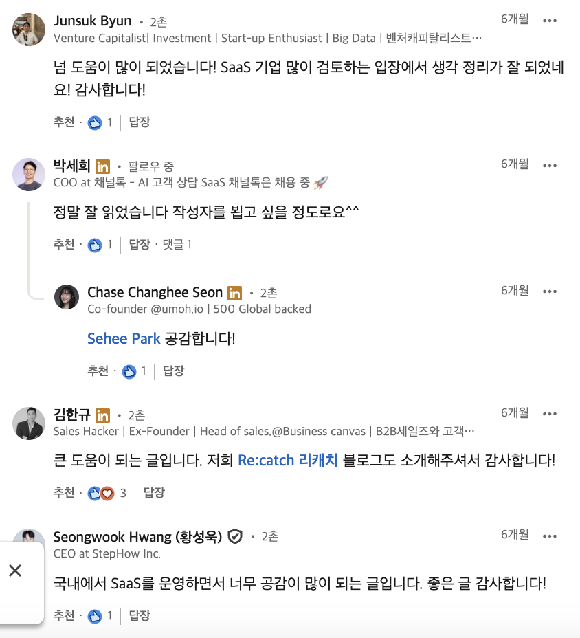

| tell me about this website |
|---|
|
| write 1 쓰면 씀 | |||
|---|---|---|---|
| 한국 B2B SaaS 스타트업의 딜레마 | 스타트업, B2B, SaaS, SI, 세일즈, PLG |  |
2025.03.19 |
| 닮은 듯 다른 건기식과 뷰티, 평행이론으로 풀어보기 | 소비재, B2C, 탐색재, 경험재, 신용재 | 2025.04.11 | |
| HR SaaS 버티컬 확장이 어려운 이유 | HRM, HRD, 채용, SaaS, 스케일업 | 2025.06.12 | |
| 교육 시장을 바라보는 새로운 시선 | 에듀테크, 시대인재, 욕망 비즈니스, 자기계발 | 2025.06.24 | |
| 호텔과 항공, 여행 예약에 숨은 게임의 규칙 | 여행업, 플랫폼, 네트워크 효과, OTA, GDS | 2025.08.20 | |
| "오늘 배송되나요?" 물류에 기술로 답하는 KV 패밀리 | 딥테크, 스타트업, 물류센터, 자동화, 라스트마일 | 2025.03.28 | |
| 디지털 헬스케어 스타트업의 진짜 드라마는 인허가 이후 시작된다 | 디지털 헬스케어, 디퓨저 모델, DTx, 의료진, 워크플로우 | 2025.06.17 |
| write 2 쓰고 싶어서 | ||
|---|---|---|
| 야나기 무네요시(柳宗悅)와 조선의 미(美) | history | 2022 |
| 사할린 ‘잔류’ 일본인의 삶으로 보는 ‘트랜스내셔널’한 삶의 실천 | history | 2020 |
| translate | ||||
|---|---|---|---|---|
| where can I find your work | |
|---|---|